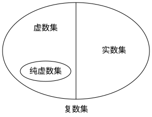

OI Wiki · prijevod · MatematikaOI Wiki · translation · Mathematics
Kompleksni brojeviComplex numbers
Sadržaj
Ako ste već učili o kompleksnim brojevima, preskočite ovu stranicu.
Za učenje o kompleksnim brojevima potrebno je nešto osnova o vektorima; ako o vektorima još niste učili, pogledajte stranicu o vektorima.
Kompleksni brojevi
Uvod
Napomena
Način uvođenja koji slijedi preuzet je iz kineskog srednjoškolskog udžbenika matematike (人教版 A 版必修二, izdanje People's Education Press, inačica A, obvezni svezak 2).
Gledano s gledišta jednadžbi, pitanje može li se iz negativnog realnog broja vaditi drugi korijen zapravo je pitanje ima li jednadžba \(x^2+a=0 (a>0)\) rješenje, što se svodi na pitanje ima li jednadžba \(x^2+1=0\) rješenje.
Ako se osvrnemo na dosadašnja proširenja skupova brojeva, vidimo da je svako proširenje bilo usko povezano sa stvarnom potrebom. Primjerice, da bi se riješio problem mjerenja dijagonale kvadrata, kao i problem da jednadžba poput \(x^2-2=0\) nema rješenja u skupu racionalnih brojeva, skup racionalnih brojeva proširen je na skup realnih brojeva. Nakon proširenja, zbrajanje i množenje definirani u skupu realnih brojeva usklađeni su sa zbrajanjem i množenjem koji su prije bili definirani u skupu racionalnih brojeva, a zbrajanje i množenje zadovoljavaju komutativnost i asocijativnost te je množenje distributivno prema zbrajanju.
Slijedeći tu ideju, da bismo riješili problem da jednadžba poput \(x^2+1=0\) nema rješenja u sustavu realnih brojeva, zamislimo da uvodimo novi broj \(\mathrm{i}\) takav da je \(x=\mathrm{i}\) rješenje jednadžbe \(x^2+1=0\), tj. takav da je \(\mathrm{i}^2=-1\).
Razmislimo: dodamo li novouvedeni broj \(\mathrm{i}\) skupu realnih brojeva, želimo da se broj \(\mathrm{i}\) i realni brojevi i dalje mogu zbrajati i množiti kao realni brojevi, te da zbrajanje i množenje zadovoljavaju komutativnost i asocijativnost, a množenje distributivnost prema zbrajanju. Od kojih se brojeva onda sastoji novi sustav brojeva dobiven proširenjem sustava realnih brojeva?
Prema gornjoj zamisli, umnožak realnog broja \(b\) i \(\mathrm{i}\) zapisujemo \(b\mathrm{i}\), a zbroj realnog broja \(a\) i \(b\mathrm{i}\) zapisujemo \(a+b\mathrm{i}\). Uočimo da se svi realni brojevi, kao i \(\mathrm{i}\), mogu zapisati u obliku \(a+b\mathrm{i}(a,b\in \mathbf{R})\), pa su svi ti brojevi u proširenom novom skupu brojeva.
Definicija
Brojeve oblika \(a+b\mathrm{i}\), gdje je \(a,b\in \mathbf{R}\), zovemo kompleksni brojevi; pritom se \(\mathrm{i}\) zove imaginarna jedinica, a skup svih kompleksnih brojeva zove se skup kompleksnih brojeva i označava \(\mathbf{C}\).
Kompleksni brojevi obično se označavaju sa \(z\), tj. \(z=a+b\mathrm{i}\). Taj se oblik zove algebarski oblik kompleksnog broja. Pritom se \(a\) zove realni dio kompleksnog broja \(z\) i označava \(\operatorname{Re}(z)\), a \(b\) imaginarni dio kompleksnog broja \(z\) i označava \(\operatorname{Im}(z)\). Ako nije drukčije rečeno, uvijek je \(a,b\in \mathbf{R}\).
Kompleksni broj \(z\) je realan ako i samo ako je \(b=0\); ako je \(b\not = 0\), on je imaginaran, a ako je \(a=0\) i \(b\not = 0\), on je čisto imaginaran.
Odnos čisto imaginarnih, imaginarnih, realnih i kompleksnih brojeva prikazan je na slici.

Svojstva i operacije
Geometrijsko značenje
Znamo da se brojevi oblika \(a+b\mathrm{i}\) zovu kompleksni brojevi, dali smo definiciju i podjelu, a sada možemo istražiti i dublja svojstva.
Sve realne brojeve smjestili smo na brojevni pravac i otkrili da točke brojevnog pravca odgovaraju realnim brojevima jedan na jedan. Razmotrimo može li se tako postupiti i s kompleksnim brojevima.
Najprije definiramo jednakost kompleksnih brojeva: dva kompleksna broja \(z_1=a+b\mathrm{i},z_2=c+d\mathrm{i}\) jednaka su ako i samo ako je \(a=c\) i \(b=d\).
Ta je definicija sasvim prirodna i ovdje je nećemo dodatno objašnjavati.
Drugim riječima, kompleksni broj \(z=a+b\mathrm{i}\) možemo prikazati jedinstvenim uređenim parom realnih brojeva \((a,b)\). Tako, prisjetimo li se pravokutnog koordinatnog sustava, otkrivamo da skup kompleksnih brojeva odgovara jedan na jedan skupu točaka pravokutnog koordinatnog sustava. Dobro, pronašli smo jedno geometrijsko značenje kompleksnih brojeva.
Taj pravokutni koordinatni sustav tada više nije običan, jer njegove točke imaju posebno značenje – predstavljaju kompleksni broj; zato takav pravokutni koordinatni sustav zovemo kompleksna ravnina, os \(x\) zovemo realna os, a os \(y\) imaginarna os. Dalje kažemo: skup kompleksnih brojeva odgovara jedan na jedan skupu svih točaka kompleksne ravnine.
Prisjetimo se znanja o vektorima u ravnini: koordinatni zapis vektora također je uređeni par realnih brojeva \((a,b)\). Očito, kompleksni broj \(z=a+b\mathrm{i}\) odgovara točki \(Z(a,b)\) kompleksne ravnine, pa odgovara i vektoru \(\overrightarrow{OZ}=(a,b)\) u ravnini; tako smo pronašli još jedno geometrijsko značenje kompleksnih brojeva: skup kompleksnih brojeva odgovara jedan na jedan skupu vektora u kompleksnoj ravnini (realnom broju \(0\) odgovara nul-vektor).
Prenoseći znanje o vektorima na kompleksne brojeve, definiramo modul kompleksnog broja kao modul (duljinu) vektora koji odgovara tom kompleksnom broju. Modul kompleksnog broja \(z=a+b\mathrm{i}\) je \(|z|=\sqrt{a^2+b^2}\).
Radi jednostavnosti kompleksni broj \(z=a+b\mathrm{i}\) često zovemo točkom \(Z\) ili vektorom \(\overrightarrow {OZ}\) i dogovorno jednaki vektori predstavljaju isti kompleksni broj.
Iz znanja o vektorima također vidimo da se imaginarni brojevi ne mogu uspoređivati po veličini (dok realni mogu).
Zbrajanje i oduzimanje
Za kompleksne brojeve \(z_1=a+b\mathrm{i},z_2=c+d\mathrm{i}\) zbrajanje definiramo ovako:
Očito je zbroj dvaju kompleksnih brojeva opet kompleksan broj.
Usporedimo li sa zbrajanjem vektora, vidimo da zbrajanje kompleksnih brojeva slijedi pravilo zbrajanja vektora, što također potvrđuje ispravnost geometrijskog značenja kompleksnih brojeva.
Isto se tako može provjeriti da zbrajanje kompleksnih brojeva zadovoljava komutativnost i asocijativnost, tj.:
Oduzimanje je inverzna operacija zbrajanja, pa pravilo oduzimanja možemo izvesti iz pravila zbrajanja i definicije jednakosti kompleksnih brojeva:
To se također slaže s oduzimanjem vektora.
Množenje, dijeljenje i konjugiranje
Za kompleksne brojeve \(z_1=a+b\mathrm{i},z_2=c+d\mathrm{i}\) množenje definiramo ovako:
Vidimo da je množenje dvaju kompleksnih brojeva slično množenju dvaju polinoma: dovoljno je \(\mathrm{i}^2\) zamijeniti s \(-1\) te zasebno sabrati realne i imaginarne dijelove.
Množenje kompleksnih brojeva po obliku je slično vektorskom produktu vektora.
Lako se vidi da množenje kompleksnih brojeva zadovoljava komutativnost, asocijativnost i distributivnost prema zbrajanju, tj.:
- \(z_1z_2=z_2z_1\)
- \((z_1z_2)z_3=z_1(z_2z_3)\)
- \(z_1(z_2+z_3)=z_1z_2+z_1z_3\)
Budući da vrijede ti zakoni, uočavamo da formule za množenje iz polja realnih brojeva jednako vrijede i u polju kompleksnih brojeva.
Dijeljenje je inverzna operacija množenja; izvedimo ga:
Budući da za vektore ne postoji dijeljenje, ovdje ne razmatramo vezu s vektorima.
Da bismo nazivnik učinili realnim, pomnožili smo s \(c-d\mathrm{i}\); taj je izraz vrlo značajan.
Za kompleksni broj \(z=a+b\mathrm{i}\) broj \(a-b\mathrm{i}\) zovemo konjugirano kompleksni broj broja \(z\) i obično ga označavamo \(\bar z\). Uočavamo da su dva međusobno konjugirana kompleksna broja simetrična s obzirom na realnu os.
Za kompleksne brojeve \(z,w\) konjugiranje ima sljedeća svojstva:
- \(z\cdot\bar{z}=|z|^2\)
- \(\overline{\overline{z}}=z\)
- \(\operatorname{Re}(z)=\dfrac{z+\bar{z}}{2}\), \(\operatorname{Im}(z)=\dfrac{z-\bar{z}}{2}\)
- \(\overline{z\pm w}=\bar{z}\pm\bar{w}\)
- \(\overline{zw}=\bar{z}\bar{w}\)
- \(\overline{z/w}=\bar{z}/\bar{w}\)
Argument i glavna vrijednost argumenta
Ako realnu jedinicu \(1\) uzmemo za pozitivan vodoravni smjer, a imaginarnu jedinicu \(\mathrm{i}\) za pozitivan okomiti smjer, dobivamo kompleksnu ravninu gledanu kroz pravokutne koordinate.
Položaj kompleksnog broja \(z\) može se odrediti i pomoću polarnih koordinata \((r, \theta)\). Već smo spomenuli da je \(r\) modul kompleksnog broja \(z\).
Kut \(\theta\) između pozitivnog smjera realne osi i vektora koji odgovara nenul kompleksnom broju \(z=x+\mathrm{i}y\) zadovoljava relaciju:
i zove se argument kompleksnog broja \(z\); označava se:
Svaki nenul kompleksni broj \(z\) ima beskonačno mnogo argumenata, pa je \(\arg z\) zapravo skup. Zapisom s velikim početnim slovom, \(\operatorname{Arg} z\), označava se jedna određena vrijednost koja zadovoljava uvjet:
\(\operatorname{Arg} z\) zove se glavna vrijednost argumenta ili glavni argument. Argument se dobiva iz glavne vrijednosti argumenta dodavanjem cjelobrojnog višekratnika (koji može biti nula ili negativan) od \(2k\pi\), tj. \(\arg z = \{\operatorname{Arg} z + 2k\pi \mid k\in \mathbf Z\}\).
Treba uočiti da zbroj dviju glavnih vrijednosti argumenta ne mora opet biti glavna vrijednost argumenta, dok je zbroj dvaju argumenata uvijek valjan argument.
Lik koji u kompleksnoj ravnini čine kompleksni brojevi modula manjeg od \(1\) zovemo jedinični krug. Kompleksne brojeve modula jednakog \(1\) zovemo jedinični kompleksni brojevi, a lik koji u kompleksnoj ravnini čine svi jedinični kompleksni brojevi zovemo jedinična kružnica. Kad ne može doći do zabune, jedinična kružnica katkad se također kraće zove jedinični krug.
Gledano kroz polarne koordinate, množenje i dijeljenje kompleksnih brojeva postaju vrlo jednostavni. Pri množenju kompleksnih brojeva moduli se množe, a argumenti zbrajaju. Pri dijeljenju kompleksnih brojeva moduli se dijele, a argumenti oduzimaju.
Eulerova formula
Eulerova formula (Euler's formula)1
Za svaki realni broj \(x\) vrijedi
Nakon što dodatno definiramo kompleksnu eksponencijalnu funkciju i kompleksne trigonometrijske funkcije, formula se može proširiti na sve kompleksne brojeve.
Eksponencijalna funkcija i trigonometrijske funkcije
Za kompleksni broj \(z=x+\mathrm{i}y\) funkcija \(f(z)=\mathrm{e}^x(\cos y+\mathrm{i}\sin y)\) zadovoljava \(f(z_1+z_2)=f(z_1)f(z_2)\). Time je dana definicija kompleksne eksponencijalne funkcije:
Na skupu realnih brojeva kompleksna eksponencijalna funkcija potpuno se podudara s realnom eksponencijalnom funkcijom. U kompleksnoj ravnini ima sljedeća svojstva:
- Modul je uvijek pozitivan: \(|\exp z|=\exp x>0\).
- Argument: \(\arg(\exp z)=\{y + 2k\pi \mid k\in\mathbf Z\}\).
- Adicijski teorem: \(\exp (z_1+z_2)=\exp (z_1)\exp (z_2)\).
- Periodičnost: \(\exp z\) je periodična funkcija s osnovnim periodom \(2\pi \mathrm{i}\). Ako je svaki period funkcije \(f(z)\) cjelobrojni višekratnik nekog perioda, taj se period zove osnovni period.
Kompleksne trigonometrijske funkcije (kraće i samo trigonometrijske funkcije) definiraju se ovako:
Ako uzmemo \(z\in\mathbf{R}\), iz Eulerove formule slijedi:
Na skupu realnih brojeva kompleksne trigonometrijske funkcije potpuno se podudaraju s realnim trigonometrijskim funkcijama. U kompleksnoj ravnini imaju sljedeća svojstva:
- Parnost: sinus je neparna funkcija, a kosinus parna.
- Trigonometrijski identiteti: uobičajeni trigonometrijski identiteti i dalje vrijede, npr. zbroj kvadrata jednak je \(1\), formule za sinus i kosinus zbroja i razlike kutova itd.
- Periodičnost: sinus i kosinus imaju osnovni period \(2\pi\).
- Nultočke: sve nultočke realnog sinusa i kosinusa čine sve nultočke kompleksnog sinusa i kosinusa. Ovo proširenje ne uvodi nove nultočke.
- Neograničenost modula: modul kompleksnog sinusa i kosinusa može biti veći od bilo kojeg zadanog pozitivnog broja; više nije ograničen na \(1\) kao kod realnog sinusa i kosinusa.
Tri oblika kompleksnog broja
Gledajući kroz pravokutni i kroz polarni koordinatni sustav, kompleksni broj možemo zapisati u tri oblika.
Algebarski oblik kompleksnog broja služi za prikaz proizvoljnog kompleksnog broja.
Algebarski oblik prikladan je za računanje četiriju osnovnih operacija s kompleksnim brojevima: zbrajanja, oduzimanja, množenja i dijeljenja.
Trigonometrijski oblik i eksponencijalni oblik kompleksnog broja služe za prikaz nenul kompleksnih brojeva.
Ta su dva oblika prikladnija za računanje množenja i dijeljenja kompleksnih brojeva te operacija koje slijede. Ako se koristimo samo funkcijama poznatima iz srednje škole, možemo upotrijebiti trigonometrijski oblik. Ako smo uveli kompleksnu eksponencijalnu funkciju, prikladnije je pisati ekvivalentan eksponencijalni oblik.
Korijeni jedinice
Promotrimo rješenja jednadžbe \(x^n=1\) u kompleksnim brojevima. Očito takvih rješenja ima \(n\) i svih tih \(n\) rješenja zovemo \(n\)-ti (kompleksni) korijeni jedinice (\(n\)-th root of unity). Iz znanja o kompleksnoj ravnini slijedi da \(n\)-ti korijeni jedinice dijele jediničnu kružnicu na \(n\) jednakih dijelova.
Neka je \(\omega_n=\exp\dfrac{2\pi \mathrm{i}}{n}\) (tj. jedinični kompleksni broj s argumentom \(2\pi/n\)); tada se skup rješenja jednadžbe \(x^n=1\) zapisuje \(\{\omega_n^k\mid k=0,1\cdots,n-1\}\), pri čemu je
Ako nije drukčije rečeno, pod \(n\)-tim korijenom jedinice u općenitom se tekstu misli na prvo rješenje počevši od \(1\) u smjeru suprotnom od kazaljke na satu, tj. na gornji \(\omega_n\); sva ostala rješenja mogu se prikazati potencijama od \(\omega_n\).
Zašto se pod \(n\)-tim korijenom jedinice obično misli upravo na prvi?
Uglavnom radi praktičnosti u primjenama. Svi \(n\)-ti korijeni jedinice mogu se prikazati kao potencije prvog \(n\)-tog korijena jedinice \(\omega_n\); štoviše, za svaki \(k < n\) kompleksni broj \(\omega_n\) nije \(k\)-ti korijen jedinice.
Primitivni korijeni jedinice
Zapravo, među \(n\)-tim korijenima jedinice \(\omega_n\) nije jedini koji ima takvo svojstvo. Elemente skupa
zovemo primitivni \(n\)-ti korijeni jedinice (\(n\)-th primitive root of unity). Iz gornjeg izraza slijedi da primitivnih \(n\)-tih korijena jedinice ima ukupno \(\varphi(n)\), gdje je \(\varphi(n)\) Eulerova funkcija.
Svaki primitivni korijen jedinice \(\omega\) ima isto svojstvo kao gornji \(\omega_n\): za svaki \(0<k<n\) \(k\)-ta potencija od \(\omega\) nije \(1\), tj. \(\omega\) nije \(k\)-ti korijen jedinice. Zato se pomoću bilo kojeg primitivnog korijena jedinice mogu generirati svi korijeni jedinice.
Da bismo razumjeli strukturu primitivnih \(n\)-tih korijena jedinice, trebamo sljedeće svojstvo korijena jedinice:
Svojstvo
Za cijele brojeve \(n\) i \(k\) neka je \(d=\gcd(n,k)\); tada je \(\omega_n^k = \omega_{n/d}^{k/d}\).
Dokaz
Izravnim računom dobivamo
To znači da je, kad god je \(\gcd(n,k)\neq 1\), \(\omega_n^k\) nužno (primitivni) korijen jedinice reda \(\dfrac{n}{\gcd(n,k)}\). Zato korijen jedinice \(\omega_n^k\) koji ima gore opisano svojstvo nužno zadovoljava \(\gcd(n,k)=1\). Upravo je to razlog zašto primitivni korijeni jedinice imaju gornju definiciju.
Osim toga, kao jednostavna posljedica ove analize vrijedi:
Teorem
Kad \(k\) prolazi svim djeliteljima od \(n\), svi primitivni \(k\)-ti korijeni jedinice čine upravo jednu particiju skupa \(n\)-tih korijena jedinice. Štoviše, za \(\ell\perp n\) preslikavanje \(x\mapsto x^\ell\) daje bijekciju skupa \(n\)-tih korijena jedinice na sebe koja čuva tu particiju: primitivne korijene jedinice reda \(k\mid n\) i dalje preslikava u primitivne \(k\)-te korijene jedinice.
Iako postoji mnogo izbora primitivnog korijena jedinice, prvi korijen \(\omega_n\) ima najjednostavniji oblik, pa se u algoritamskim natjecanjima ipak najčešće koristi \(\omega_n\). U nekim situacijama, radi veće učinkovitosti računanja, umjesto \(\omega_n\) iz polja kompleksnih brojeva može se razmotriti i primitivni korijen jedinice modulo neki modul.
Kompleksni brojevi u programskim jezicima
Kompleksni brojevi u C-u
Standard C99 uvodi zaglavlje <complex.h>.
Zaglavlje <complex.h> pruža tri tipa: double complex, float complex i long double complex.
Aritmetički operatori '+', '-', '*' i '/' mogu se primjenjivati na proizvoljnu kombinaciju brojeva s pomičnim zarezom i kompleksnih brojeva. Ako je jedan od operanada izraza kompleksan, rezultat je kompleksan.
Zaglavlje <complex.h> pruža imaginarnu jedinicu I; kad je to zaglavlje uključeno, veliko slovo I ne može se koristiti kao ime varijable.
Za pojedini kompleksni broj <complex.h> pruža nekoliko operacija: funkcija creal izdvaja realni dio, cimag izdvaja imaginarni dio, cabs računa modul, a carg računa glavnu vrijednost argumenta.
Sve funkcije dolaze u tri inačice ovisno o tipu. Primjerice, funkcija creal postoji kao creal, crealf i creall, za tipove double, float odnosno long double. Inačica bez sufiksa obrađuje tip double. Sve funkcije u nastavku slijede isto pravilo i to više nećemo posebno naglašavati.
Povratne vrijednosti tih funkcija obični su brojevi s pomičnim zarezom. Običan broj s pomičnim zarezom može se izravno pridružiti kompleksnom broju, ali kompleksni broj ne može se izravno pridružiti broju s pomičnim zarezom; umjesto toga treba koristiti gornje operacije izdvajanja.
Funkcija conj računa konjugirano kompleksni broj; povratna vrijednost je kompleksan broj.
Funkcija cexp računa kompleksnu eksponencijalnu funkciju, clog glavnu vrijednost logaritma, csin sinus, ccos kosinus, a ctan tangens.
Funkcija cpow računa potenciju, csqrt drugi korijen, casin arkus sinus, cacos arkus kosinus, a catan arkus tangens. Sve te funkcije računaju glavne vrijednosti višeznačnih funkcija.
Kompleksni brojevi u C++-u
Zaglavlje <ctype.h> iz C-a u C++-u postaje <cctype> i gotovo sva zaglavlja slijede to pravilo imenovanja.
Međutim, <complex.h> ga ne slijedi: C++ nema zaglavlje <ccomplex>. Kompleksni brojevi u C++-u nalaze se izravno u <complex>, a sadržaj je potpuno različit od onoga u C-u.
Zanimljivo. Razlog je taj što je <complex> postojao već u prvoj inačici C++-a, C++98, dok ga je jezik C dobio tek u C99.
U C++-u kompleksni se tipovi definiraju kao complex<float>, complex<double> i complex<long double>. Zbog polimorfizma objektno orijentiranog programiranja imena funkcija u nastavku jedinstvena su, bez sufiksa f ili l.
Objekt kompleksnog broja ima članske funkcije real i imag za pristup realnom i imaginarnom dijelu.
Za objekt kompleksnog broja postoje i nečlanske funkcije real, imag, abs i arg, koje vraćaju realni dio, imaginarni dio, modul i argument.
Postoje i nečlanske funkcije norm, kvadrat modula, te conj, konjugirano kompleksni broj.
Postoje i nečlanske funkcije exp, log (glavna vrijednost logaritma s bazom \(\mathrm{e}\)), log10 (glavna vrijednost logaritma s bazom 10, ne postoji u C-u), pow, sqrt, sin, cos i tan, s istim značenjem kao u C-u.
Od C++14 nadalje definirani su operatori literala std::literals::complex_literals::""if, ""i, ""il. Primjerice, 100if, 100i i 100il vraćaju redom std::complex<float>{0.0f, 100.0f}, std::complex<double>{0.0, 100.0} i std::complex<long double>{0.0l, 100.0l}. To nam omogućuje da deklaraciju kompleksnog broja zgodno zapišemo kao auto z = 4.0 + 3i.
Literatura i poveznice
- Complex number - Wikipedia
- Euler's formula - Wikipedia
- Complex number arithmetic - cppreference.com
- std::complex - cppreference.com
-
Više o Eulerovoj formuli možete pronaći u dva videa: 欧拉公式与初等群论 (Eulerova formula i elementarna teorija grupa) i 微分方程概论 - 第五章：在 3.14 分钟内理解 \(\mathrm{e}^{\mathrm{i}\pi}\) (Uvod u diferencijalne jednadžbe – 5. poglavlje: razumjeti \(\mathrm{e}^{\mathrm{i}\pi}\) u 3.14 minute). ↩
Contents
If you have already learned about complex numbers, skip this page.
Learning about complex numbers requires some background on vectors; if you have not learned about vectors yet, see the page on vectors.
Complex numbers
Introduction
Note
The introduction below is taken from a Chinese high-school mathematics textbook (人教版 A 版必修二, People's Education Press edition, version A, compulsory volume 2).
From the point of view of equations, whether a negative real number has a square root is the question of whether the equation \(x^2+a=0 (a>0)\) has a solution, which reduces to whether the equation \(x^2+1=0\) has a solution.
Looking back at the previous extensions of number sets, we see that each extension was closely tied to a practical need. For example, to solve the problem of measuring the diagonal of a square, and the problem that an equation like \(x^2-2=0\) has no solution in the set of rational numbers, people extended the set of rational numbers to the set of real numbers. After the extension, the addition and multiplication defined on the set of real numbers agree with the addition and multiplication previously defined on the set of rational numbers, and addition and multiplication are both commutative and associative, and multiplication is distributive over addition.
Following this idea, to solve the problem that an equation like \(x^2+1=0\) has no solution in the real number system, we imagine introducing a new number \(\mathrm{i}\) such that \(x=\mathrm{i}\) is a solution of the equation \(x^2+1=0\), i.e. such that \(\mathrm{i}^2=-1\).
Think about it: after adding the newly introduced number \(\mathrm{i}\) to the set of real numbers, we want the number \(\mathrm{i}\) and the real numbers to still support addition and multiplication just like real numbers do, and we want addition and multiplication to be commutative and associative, and multiplication to be distributive over addition. So, after extending the real number system, which numbers make up the new number system?
Following the idea above, we write the product of a real number \(b\) and \(\mathrm{i}\) as \(b\mathrm{i}\), and the sum of a real number \(a\) and \(b\mathrm{i}\) as \(a+b\mathrm{i}\). Note that all real numbers as well as \(\mathrm{i}\) can be written in the form \(a+b\mathrm{i}(a,b\in \mathbf{R})\), so all these numbers belong to the extended new number set.
Definition
We define numbers of the form \(a+b\mathrm{i}\), where \(a,b\in \mathbf{R}\), to be complex numbers; here \(\mathrm{i}\) is called the imaginary unit, and the set of all complex numbers is called the set of complex numbers, denoted by \(\mathbf{C}\).
Complex numbers are usually denoted by \(z\), i.e. \(z=a+b\mathrm{i}\). This form is called the algebraic form of a complex number. Here \(a\) is called the real part of the complex number \(z\), denoted by \(\operatorname{Re}(z)\), and \(b\) is called the imaginary part of \(z\), denoted by \(\operatorname{Im}(z)\). Unless stated otherwise, we always have \(a,b\in \mathbf{R}\).
A complex number \(z\) is real if and only if \(b=0\); when \(b\not = 0\) it is imaginary, and when \(a=0\) and \(b\not = 0\) it is purely imaginary.
The relationship between purely imaginary, imaginary, real and complex numbers is shown in the figure below.
Properties and operations
Geometric meaning
We know that numbers of the form \(a+b\mathrm{i}\) are called complex numbers, and we have given their definition and classification; now we can dig into some deeper properties.
We placed all real numbers on the number line and found that the points of the number line correspond one-to-one to the real numbers. Let us consider doing the same for complex numbers.
First we define equality of complex numbers: two complex numbers \(z_1=a+b\mathrm{i},z_2=c+d\mathrm{i}\) are equal if and only if \(a=c\) and \(b=d\).
This definition is very natural, and we do not explain it further here.
In other words, we can represent a complex number \(z=a+b\mathrm{i}\) by the unique ordered pair of real numbers \((a,b)\). Thus, thinking of the rectangular coordinate system, we find that the set of complex numbers corresponds one-to-one to the set of points of the rectangular coordinate system. Good, we have found one geometric meaning of complex numbers.
This rectangular coordinate system is then no longer an ordinary one, since its points have a special meaning: they represent complex numbers. So we call such a rectangular coordinate system the complex plane, the \(x\)-axis the real axis, and the \(y\)-axis the imaginary axis. We further say: the set of complex numbers corresponds one-to-one to the set of all points of the complex plane.
Recalling what we learned about plane vectors, we find that the coordinate representation of a vector is also an ordered pair of real numbers \((a,b)\). Clearly, the complex number \(z=a+b\mathrm{i}\) corresponds to the point \(Z(a,b)\) of the complex plane, so it also corresponds to the plane vector \(\overrightarrow{OZ}=(a,b)\). Thus we have found another geometric meaning of complex numbers: the set of complex numbers corresponds one-to-one to the set of vectors in the complex plane (the real number \(0\) corresponds to the zero vector).
Transferring our knowledge of vectors to complex numbers, we define the modulus of a complex number to be the modulus (length) of the vector corresponding to it. The modulus of the complex number \(z=a+b\mathrm{i}\) is \(|z|=\sqrt{a^2+b^2}\).
For convenience, we often refer to the complex number \(z=a+b\mathrm{i}\) as the point \(Z\) or the vector \(\overrightarrow {OZ}\), and we agree that equal vectors represent the same complex number.
Also, from our knowledge of vectors we see that imaginary numbers cannot be compared by size (whereas real numbers can).
Addition and subtraction
For complex numbers \(z_1=a+b\mathrm{i},z_2=c+d\mathrm{i}\), addition is defined as follows:
Clearly, the sum of two complex numbers is again a complex number.
Comparing with vector addition, we find that addition of complex numbers follows the rule of vector addition, which again confirms the correctness of the geometric meaning of complex numbers.
Likewise one can verify that addition of complex numbers is commutative and associative, i.e.:
Subtraction is the inverse operation of addition, so we can derive the rule for subtraction from the rule for addition and the definition of equality of complex numbers:
This also agrees with vector subtraction.
Multiplication, division and conjugation
For complex numbers \(z_1=a+b\mathrm{i},z_2=c+d\mathrm{i}\), multiplication is defined as follows:
We see that multiplying two complex numbers is similar to multiplying two polynomials: just replace \(\mathrm{i}^2\) by \(-1\) and collect the real and imaginary parts separately.
Multiplication of complex numbers is similar in form to the cross product of vectors.
It is easy to see that multiplication of complex numbers is commutative, associative and distributive over addition, i.e.:
- \(z_1z_2=z_2z_1\)
- \((z_1z_2)z_3=z_1(z_2z_3)\)
- \(z_1(z_2+z_3)=z_1z_2+z_1z_3\)
Since these laws hold, we find that the multiplication formulas of the real field also hold in the complex field.
Division is the inverse operation of multiplication; let us derive it:
Since vectors have no division, we do not discuss the relation to vectors here.
To make the denominator real, we multiplied by \(c-d\mathrm{i}\); this expression is very meaningful.
For a complex number \(z=a+b\mathrm{i}\), the number \(a-b\mathrm{i}\) is called the complex conjugate of \(z\), usually denoted by \(\bar z\). We find that if two complex numbers are conjugates of each other, they are symmetric with respect to the real axis.
For complex numbers \(z,w\), complex conjugation has the following properties:
- \(z\cdot\bar{z}=|z|^2\)
- \(\overline{\overline{z}}=z\)
- \(\operatorname{Re}(z)=\dfrac{z+\bar{z}}{2}\), \(\operatorname{Im}(z)=\dfrac{z-\bar{z}}{2}\)
- \(\overline{z\pm w}=\bar{z}\pm\bar{w}\)
- \(\overline{zw}=\bar{z}\bar{w}\)
- \(\overline{z/w}=\bar{z}/\bar{w}\)
Argument and principal value of the argument
If we take the real unit \(1\) as the positive horizontal direction and the imaginary unit \(\mathrm{i}\) as the positive vertical direction, we obtain the complex plane viewed in rectangular coordinates.
The position of a complex number \(z\) can also be determined using polar coordinates \((r, \theta)\). We have already mentioned that \(r\) is the modulus of the complex number \(z\).
The angle \(\theta\) from the positive real axis to the vector corresponding to a nonzero complex number \(z=x+\mathrm{i}y\) satisfies the relation:
and is called the argument of the complex number \(z\), denoted by:
Any nonzero complex number \(z\) has infinitely many arguments, so \(\arg z\) is in fact a set. The capitalized notation \(\operatorname{Arg} z\) denotes one particular value satisfying the condition:
\(\operatorname{Arg} z\) is called the principal value of the argument or the principal argument. An argument is the principal value of the argument plus an integer multiple (possibly zero or negative) of \(2k\pi\), i.e. \(\arg z = \{\operatorname{Arg} z + 2k\pi \mid k\in \mathbf Z\}\).
Note that the sum of two principal values of the argument is not necessarily a principal value of the argument, while the sum of two arguments is always a valid argument.
The figure formed in the complex plane by the complex numbers of modulus less than \(1\) is called the unit disk. Complex numbers of modulus equal to \(1\) are called unit complex numbers, and the figure formed in the complex plane by all unit complex numbers is called the unit circle. When no confusion can arise, the unit circle is sometimes also referred to simply as the unit disk.
Viewed in polar coordinates, multiplication and division of complex numbers become very simple. For complex multiplication, the moduli are multiplied and the arguments are added. For complex division, the moduli are divided and the arguments are subtracted.
Euler's formula
Euler's formula1
For every real number \(x\),
After supplementing the definitions of the complex exponential function and complex trigonometric functions, this formula can be extended to all complex numbers.
Exponential function and trigonometric functions
For a complex number \(z=x+\mathrm{i}y\), the function \(f(z)=\mathrm{e}^x(\cos y+\mathrm{i}\sin y)\) satisfies \(f(z_1+z_2)=f(z_1)f(z_2)\). This gives the definition of the complex exponential function:
On the set of real numbers the complex exponential function agrees completely with the real exponential function. In the complex plane it has the following properties:
- The modulus is always positive: \(|\exp z|=\exp x>0\).
- Argument: \(\arg(\exp z)=\{y + 2k\pi \mid k\in\mathbf Z\}\).
- Addition theorem: \(\exp (z_1+z_2)=\exp (z_1)\exp (z_2)\).
- Periodicity: \(\exp z\) is a periodic function with fundamental period \(2\pi \mathrm{i}\). If every period of a function \(f(z)\) is an integer multiple of some period, that period is called the fundamental period.
The complex trigonometric functions (also simply called trigonometric functions) are defined as follows:
If we take \(z\in\mathbf{R}\), then by Euler's formula:
On the set of real numbers the complex trigonometric functions agree completely with the real trigonometric functions. In the complex plane they have the following properties:
- Parity: the sine function is odd and the cosine function is even.
- Trigonometric identities: the usual trigonometric identities still hold, e.g. the sum of squares equals \(1\), the angle sum and difference formulas, etc.
- Periodicity: the sine and cosine functions have fundamental period \(2\pi\).
- Zeros: all the zeros of the real sine and cosine functions constitute all the zeros of the complex sine and cosine functions. This extension introduces no new zeros.
- Unboundedness of the modulus: the modulus of the complex sine and cosine functions can exceed any given positive number; it is no longer bounded by \(1\) as for the real sine and cosine functions.
Three forms of a complex number
Using the rectangular and the polar coordinate viewpoints, a complex number can be written in three forms.
The algebraic form of a complex number is used to represent an arbitrary complex number.
The algebraic form is convenient for computing the four operations of addition, subtraction, multiplication and division of complex numbers.
The trigonometric form and the exponential form of a complex number are used to represent nonzero complex numbers.
These two forms are more convenient for computing multiplication and division of complex numbers and the operations that follow. If only functions seen in high school are used, the trigonometric form can be used. If the complex exponential function has been introduced, writing the equivalent exponential form is more convenient.
Roots of unity
Consider the solutions of the equation \(x^n=1\) over the complex numbers. Clearly there are \(n\) such solutions, and all these \(n\) solutions are called \(n\)-th (complex) roots of unity. From our knowledge of the complex plane, the \(n\)-th roots of unity divide the unit circle into \(n\) equal parts.
Let \(\omega_n=\exp\dfrac{2\pi \mathrm{i}}{n}\) (i.e. the unit complex number with argument \(2\pi/n\)); then the solution set of \(x^n=1\) is \(\{\omega_n^k\mid k=0,1\cdots,n-1\}\), where
Unless stated otherwise, "the \(n\)-th root of unity" in general discussion refers to the first solution counterclockwise from \(1\), i.e. the \(\omega_n\) above; all other solutions can be expressed as powers of \(\omega_n\).
Why does “the \(n\)-th root of unity” usually refer specifically to the first one?
Mainly for convenience in applications. All \(n\)-th roots of unity can be expressed as powers of the first \(n\)-th root of unity \(\omega_n\); moreover, for any \(k < n\), the complex number \(\omega_n\) is not a \(k\)-th root of unity.
Primitive roots of unity
In fact, \(\omega_n\) is not the only \(n\)-th root of unity with this kind of property. The elements of the set
are called primitive \(n\)-th roots of unity. From the expression above, there are \(\varphi(n)\) primitive \(n\)-th roots of unity in total, where \(\varphi(n)\) is Euler's totient function.
Any primitive root of unity \(\omega\) has the same property as the \(\omega_n\) above: for any \(0<k<n\), the \(k\)-th power of \(\omega\) is not \(1\), that is, \(\omega\) is not a \(k\)-th root of unity. Therefore, all roots of unity can be generated from any primitive root of unity.
To understand the structure of the primitive \(n\)-th roots of unity, we need the following property of roots of unity:
Property
For integers \(n\) and \(k\), let \(d=\gcd(n,k)\); then \(\omega_n^k = \omega_{n/d}^{k/d}\).
Proof
By direct computation,
This shows that whenever \(\gcd(n,k)\neq 1\), \(\omega_n^k\) is necessarily a (primitive) root of unity of order \(\dfrac{n}{\gcd(n,k)}\). Hence a root of unity \(\omega_n^k\) with the property above must satisfy \(\gcd(n,k)=1\). This is exactly why primitive roots of unity are defined as above.
In addition, as a simple corollary of this analysis, we have:
Theorem
As \(k\) ranges over the divisors of \(n\), the primitive \(k\)-th roots of unity form exactly a partition of the \(n\)-th roots of unity. Moreover, for \(\ell\perp n\), the map \(x\mapsto x^\ell\) is a bijection of the \(n\)-th roots of unity that preserves this partition: it still maps primitive roots of unity of order \(k\mid n\) to primitive \(k\)-th roots of unity.
Although there are many choices of primitive root of unity, the first root \(\omega_n\) has the simplest form, so \(\omega_n\) remains the most commonly used in competitive programming. In some scenarios, to improve computational efficiency, a primitive root of unity modulo some modulus may be used instead of \(\omega_n\) in the complex field.
Complex numbers in programming languages
Complex numbers in C
The C99 standard provides the <complex.h> header.
The <complex.h> header provides three types: double complex, float complex and long double complex.
The arithmetic operators '+', '-', '*' and '/' can be applied to any mix of floating-point and complex numbers. When one side of an expression is complex, the result is complex.
The <complex.h> header provides the imaginary unit I; when this header is included, the capital letter I cannot be used as a variable name.
For a single complex number, <complex.h> provides several operations: the creal function extracts the real part, cimag extracts the imaginary part, cabs computes the modulus, and carg computes the principal value of the argument.
Every function comes in three versions depending on the type. For example, the creal function has the versions creal, crealf and creall, handling the types double, float and long double, respectively. The version with no suffix handles double. All the functions below follow this rule, and we will not point it out again.
The return values of these functions are ordinary floating-point numbers. An ordinary floating-point number can be assigned directly to a complex number, but a complex number cannot be assigned directly to a floating-point number; the extraction operations above must be used instead.
The conj function computes the complex conjugate; its return value is a complex number.
The cexp function computes the complex exponential, clog the principal value of the logarithm, csin the sine, ccos the cosine, and ctan the tangent.
The cpow function computes the power function, csqrt the square root, casin the arcsine, cacos the arccosine, and catan the arctangent. All of these functions compute the principal values of multivalued functions.
Complex numbers in C++
The <ctype.h> header of C becomes <cctype> in C++, and almost all headers follow this naming rule.
However, <complex.h> does not: C++ has no <ccomplex> header. Complex numbers in C++ are simply in <complex>, and its contents are completely different from those in C.
Interesting. The reason is that <complex> already existed in the first version of C++, C++98, whereas the C language only added it in C99.
In C++, complex types are defined as complex<float>, complex<double> and complex<long double>. Thanks to object-oriented polymorphism, the names of the functions below are unique, with no f or l suffix.
A complex number object has the member functions real and imag, which access the real and imaginary parts.
A complex number object has the non-member functions real, imag, abs and arg, which return the real part, the imaginary part, the modulus and the argument.
A complex number object also has the non-member functions norm, the square of the modulus, and conj, the complex conjugate.
A complex number object also has the non-member functions exp, log (principal value of the logarithm with base \(\mathrm{e}\)), log10 (principal value of the logarithm with base 10, not available in C), pow, sqrt, sin, cos and tan, with the same meaning as in C.
Since C++14, the literal operators std::literals::complex_literals::""if, ""i, ""il are defined. For example, 100if, 100i and 100il return std::complex<float>{0.0f, 100.0f}, std::complex<double>{0.0, 100.0} and std::complex<long double>{0.0l, 100.0l}, respectively. This lets us conveniently write complex number declarations like auto z = 4.0 + 3i.